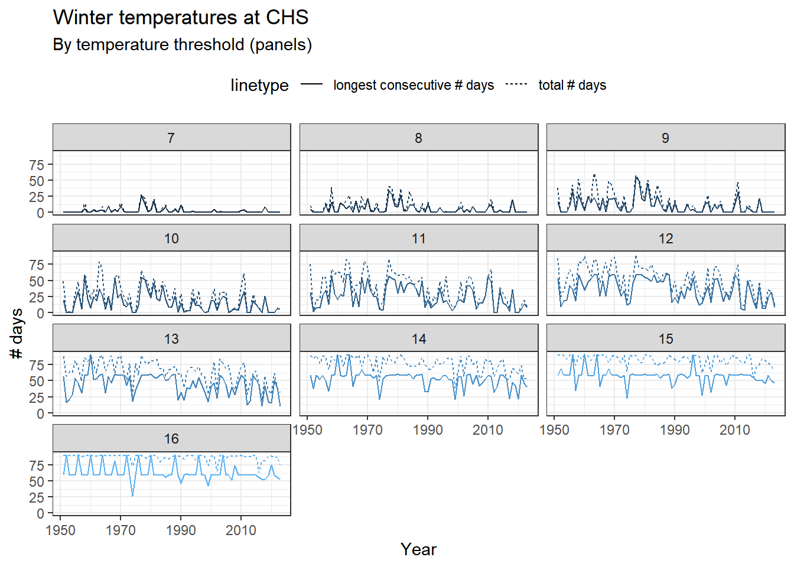
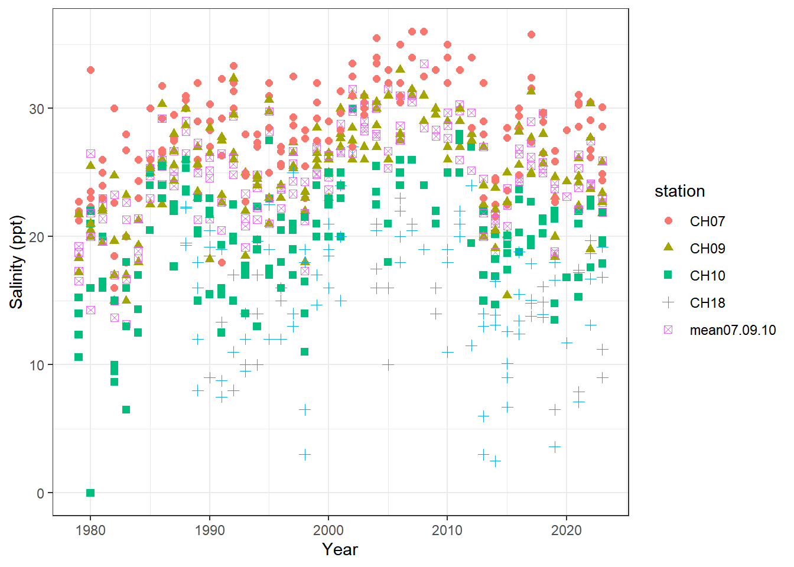
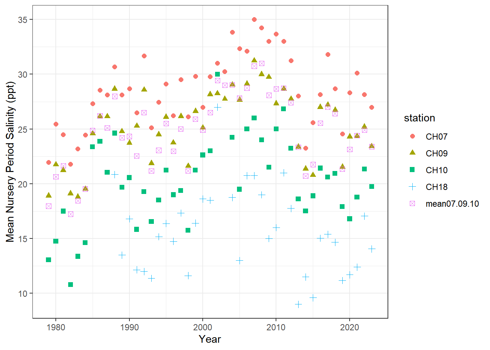
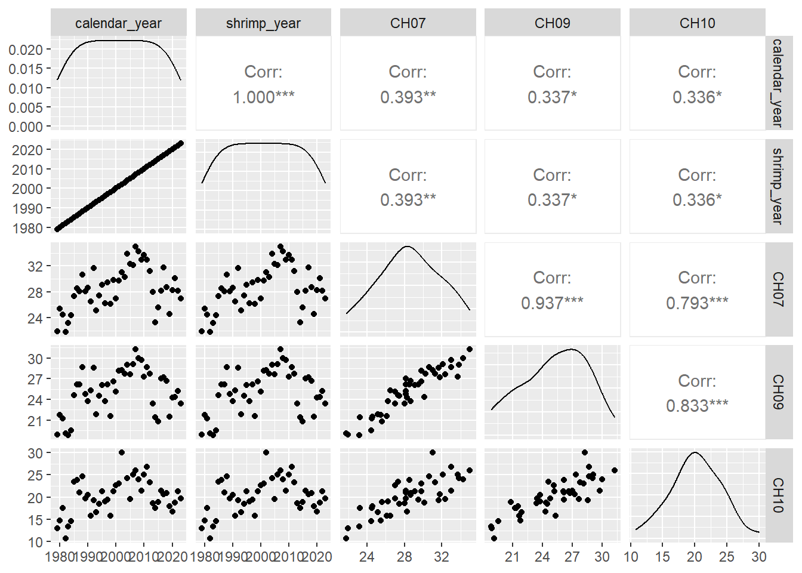
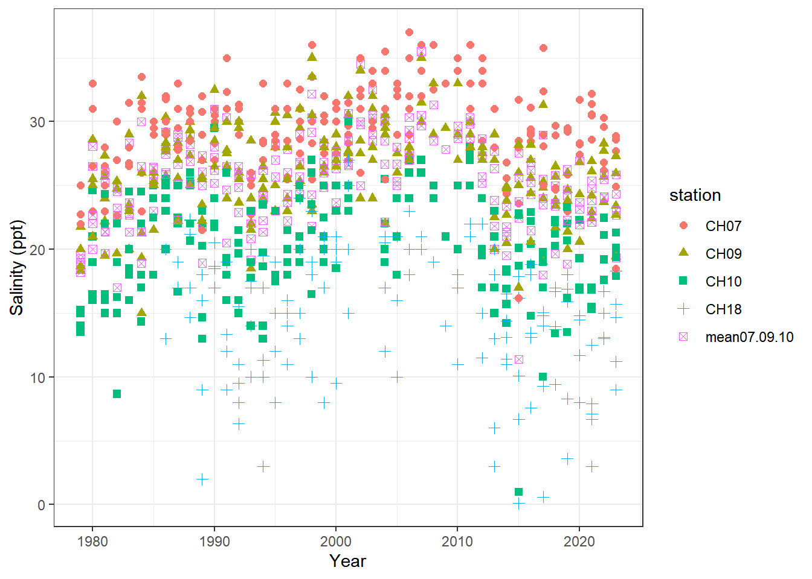
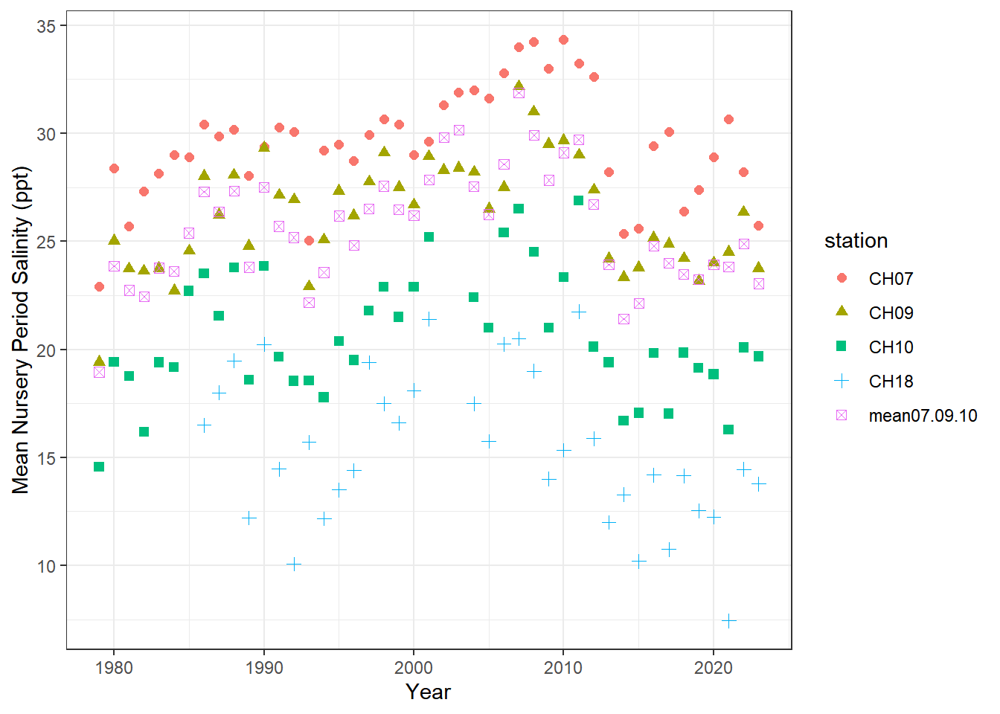
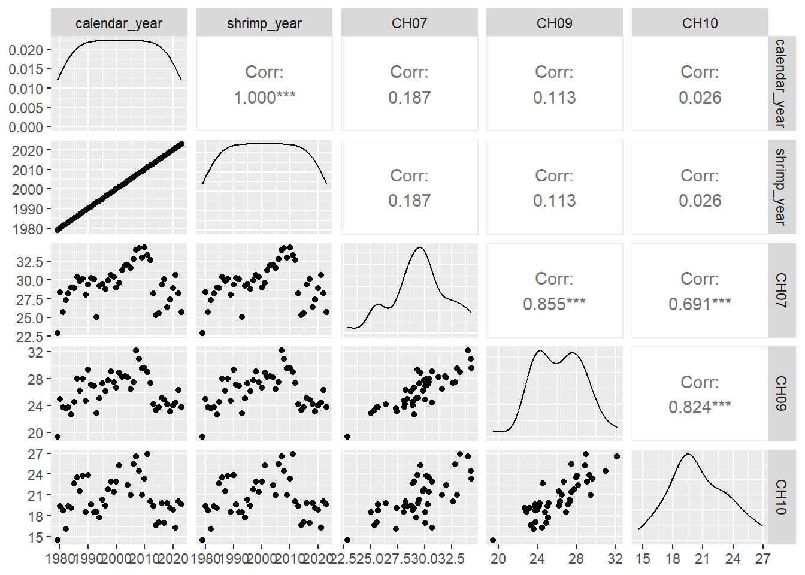

Code
library(tidyverse)
library(patchwork)
source("functions.R")
in_path <- here::here("data", "raw", "environmental")library(tidyverse)
library(patchwork)
source("functions.R")
in_path <- here::here("data", "raw", "environmental")winter = dec, jan, feb.
for brown shrimp, this is all one ‘shrimp year’. white shrimp go through 2 winters: postlarval winter and subadult winter. subadult winter is the one managers focus on but I will calculate metrics for both.
See sec-shrimpyearexpl for more on how these fit into the ‘shrimp year’ definitions used in this document.
for shrimp year 1993, postlarval winter is calendar year 1993 and subadult winter is calendar year 1994
want min winter temp, mean winter temp, and # days temp < 11C
nursery periods, per Batchelder et al. 2024, are Apr-Jul for brown shrimp and Jun-Oct for white shrimp
nursery period salinity was important to phenology in that pub so I’m now pulling out some nursery season info, 2/26/25 based on our definitions, for nursery periods, shrimp year is current year for both species
ch <- readxl::read_xlsx(here::here(in_path, "SCDNR_CHS_TempData_ 1950_2024.xlsx"))
# cut out summary rows and column
ch <- ch[1:366, -78]
# pivot
ch2 <- ch |>
pivot_longer(-c(Day, Month),
names_to = "Year",
values_to = "waterTempC") |>
mutate(across(everything(), as.numeric))There is some debate over which temperature threshold is most important. Here, we compare to each temperature from 7-16C.
ch_winter <- ch2 |>
# filter to winter, assign shrimp year, grab only complete shrimp years
filter(Month %in% c(12, 1, 2)) |>
mutate(shrimp_year = case_when(Month == 12 ~ Year + 1,
.default = Year)) |>
filter(shrimp_year >= 1951,
shrimp_year <= 2023) |>
group_by(shrimp_year)
thresholds <- 7:16
consec_out <- list()
for(i in seq_along(thresholds)){
consec_out[[i]] <- ch_winter |>
group_by(shrimp_year) |>
summarize(stats = consec_stats(waterTempC, thresholds[i])) |>
unnest_wider(stats)
}
tmp_thresh <- bind_rows(consec_out)
tmp_thresh <- tmp_thresh |>
rename(calendar_year = shrimp_year)ggplot(tmp_thresh,
aes(x = calendar_year,
col = threshold)) +
geom_line(aes(y = totalDays,
linetype = "total # days")) +
geom_line(aes(y = longestSpell,
linetype = "longest consecutive # days")) +
facet_wrap(~threshold, ncol = 3) +
theme_bw() +
labs(title = "Winter temperatures at CHS",
subtitle = "By temperature threshold (panels)",
x = "Year",
y = "# days") +
scale_color_continuous(guide = "none") +
theme(legend.position = "top")
tmp_distn <- ch2 |>
filter(Month %in% c(12, 1, 2)) |>
mutate(shrimp_year = case_when(Month == 12 ~ Year + 1,
.default = Year)) |>
filter(shrimp_year >= 1951,
shrimp_year <= 2023) |>
summarize(.by = shrimp_year,
winter_wTemp.CHS_min = min(waterTempC, na.rm = TRUE),
winter_wTemp.CHS_mean = mean(waterTempC, na.rm = TRUE),
winter_wTemp.CHS_median = median(waterTempC, na.rm = TRUE),
winter_wTemp.CHS_max = max(waterTempC, na.rm = TRUE),
winter_wTemp.CHS_p25 = quantile(waterTempC, probs = 0.25, na.rm = TRUE),
winter_wTemp.CHS_p75 = quantile(waterTempC, probs = 0.75, na.rm = TRUE),
winter_wTemp.CHS_sd = sd(waterTempC, na.rm = TRUE),
winter_wTemp.CHS_iqr = IQR(waterTempC, na.rm = TRUE)) |>
rename(calendar_year = shrimp_year)to_add <- expand.grid(shrimp_year = 1951:1978,
species = c("brown", "white")) |>
arrange(shrimp_year, species)
# widen out the threshold data frame to get one row per shrimp year
# first pivot longer so can pair up the temperature with the description
tmp_thresh_wide <- tmp_thresh |>
mutate(threshold = paste0("lessThan", threshold)) |>
pivot_longer(totalDays:longestSpell,
names_to = "stat",
values_to = "value") |>
pivot_wider(names_from = c(stat, threshold),
names_sep = "_",
values_from = value)
# add columns for species and life stage
tmp_thresh_wide <- tmp_thresh_wide |>
mutate(shrimpyear.brown_winter = calendar_year,
shrimpyear.white_postlarvalWinter = calendar_year,
shrimpyear.white_subadultWinter = calendar_year - 1) |>
relocate(all_of(starts_with("shrimpyear")), .after = calendar_year)
# thresholds: split into brown and white ----
# brown
tmp_thresh_brn_wide <- tmp_thresh_wide |>
select(shrimp_year = shrimpyear.brown_winter,
everything(),
-shrimpyear.white_postlarvalWinter,
-shrimpyear.white_subadultWinter)
# white postlarval
tmp_thresh_wht_postlarv <- tmp_thresh_wide |>
select(shrimp_year = shrimpyear.white_postlarvalWinter,
everything(),
-shrimpyear.brown_winter,
-shrimpyear.white_subadultWinter)
names(tmp_thresh_wht_postlarv)[2:32] <- paste0("postlarvWinter.", names(tmp_thresh_wht_postlarv)[2:32])
# white subadult
tmp_thresh_wht_subad <- tmp_thresh_wide |>
select(shrimp_year = shrimpyear.white_subadultWinter,
everything(),
-shrimpyear.brown_winter,
-shrimpyear.white_postlarvalWinter)
names(tmp_thresh_wht_subad)[2:32] <- paste0("subadultWinter.", names(tmp_thresh_wht_subad)[2:32])
# re-combine white
tmp_thresh_wht_all <- full_join(tmp_thresh_wht_postlarv,
tmp_thresh_wht_subad,
by = "shrimp_year")
# distns: split into brown and white ----
# add columns for species and life stage
tmp_distn <- tmp_distn |>
mutate(shrimpyear.brown_winter = calendar_year,
shrimpyear.white_postlarvalWinter = calendar_year,
shrimpyear.white_subadultWinter = calendar_year - 1) |>
relocate(all_of(starts_with("shrimpyear")), .after = calendar_year)
# brown
tmp_distn_brn <- tmp_distn |>
select(shrimp_year = shrimpyear.brown_winter,
everything(),
-shrimpyear.white_postlarvalWinter,
-shrimpyear.white_subadultWinter)
# white postlarval
tmp_distn_wht_postlarv <- tmp_distn |>
select(shrimp_year = shrimpyear.white_postlarvalWinter,
postlarvWinter_calendar_year = calendar_year,
everything(),
-shrimpyear.brown_winter,
-shrimpyear.white_subadultWinter)
names(tmp_distn_wht_postlarv) <- stringr::str_replace(names(tmp_distn_wht_postlarv), "winter", "postlarvWinter")
# white subadult
tmp_distn_wht_subad <- tmp_distn |>
select(shrimp_year = shrimpyear.white_subadultWinter,
subadultWinter_calendar_year = calendar_year,
everything(),
-shrimpyear.brown_winter,
-shrimpyear.white_postlarvalWinter)
names(tmp_distn_wht_subad) <- stringr::str_replace(names(tmp_distn_wht_subad), "winter", "subadultWinter")
# re-combine white
tmp_distn_wht_all <- full_join(tmp_distn_wht_postlarv,
tmp_distn_wht_subad,
by = "shrimp_year")Nursery period salinity was important to phenology in Batchelder et al. 2024. We define nursery periods as per that manuscript: Apr-Jul for brown shrimp and Jun-Oct for white shrimp. I use both ‘calendar_year’ and ‘shrimp_year’ here because even though they are the same by our definitions (see Table tbl-shrimpYearAssignment), it can be a little difficult to keep track of - so I’m being as explicit as possible.
Here we pull data from the stations CH07, CH09, CH10, and CH18.
trawl_dat <- read.csv(here::here(in_path,
"SCDNR_EstuarineTrawlShrimpSize.csv"))Salinity at each station was averaged to the day and month. There was at least one anomalously high value, so a line of code removed any values above 50.
# there's a row for every shrimp; condense to one row per trawl
dat <- trawl_dat |>
select(Coll, Year, Month, Day, StationCode, SalinityB) |>
filter(StationCode %in% c("CH07", "CH09", "CH10", "CH18")) |>
distinct() |>
arrange(Year, Month, StationCode)
# for each station, average to the day and to the month
# there was an anomalously high value in here so first
# replace anything over 50 with NA
dat_monthly <- dat |>
mutate(SalinityB = case_when(SalinityB > 50 ~ NA_real_,
.default = SalinityB)) |>
summarize(.by = c(StationCode, Year, Month, Day),
sal = mean(SalinityB, na.rm = TRUE)) |>
summarize(.by = c(StationCode, Year, Month),
sal = mean(sal, na.rm = TRUE)) |>
pivot_wider(names_from = StationCode,
names_prefix = "sal_",
values_from = sal) |>
rowwise() |>
mutate(sal_mean07.09.10 = mean(c(sal_CH07, sal_CH09, sal_CH10), na.rm = TRUE)) |>
ungroup() |> # leaving out CH18 because it doesn't start until the mid-80s and really affects the mean
pivot_longer(all_of(starts_with("sal")),
names_to = "station",
names_prefix = "sal_",
values_to = "sal")
# each species has different nursery periods - subset and assign appropriate shrimp years
brown_nursery <- dat_monthly |>
filter(Month %in% c(4:7))
brown_nursery_byYear <- brown_nursery |>
summarize(.by = c(station, Year),
sal = mean(sal, na.rm = TRUE))
brown_byYear_wide <- brown_nursery_byYear |>
pivot_wider(names_from = station,
values_from = sal) |>
rename(calendar_year = Year) |>
mutate(species = "brown",
shrimp_year = calendar_year) |>
relocate(species, calendar_year, shrimp_year)ggplot(brown_nursery,
aes(x = Year,
y = sal,
col = station,
shape = station)) +
geom_point(size = 2) +
theme_bw() +
labs(y = "Salinity (ppt)")
ggplot(brown_nursery_byYear,
aes(x = Year,
y = sal,
col = station,
shape = station)) +
geom_point(size = 2) +
theme_bw() +
labs(y = "Mean Nursery Period Salinity (ppt)")
Correlations between stations
Mean winter salinity for each year - we can see that mean nursery period salinity is generally well correlated between stations.
GGally::ggpairs(brown_byYear_wide,
columns = 2:6)
white_nursery <- dat_monthly |>
filter(Month %in% c(6:10))
white_nursery_byYear <- white_nursery |>
summarize(.by = c(station, Year),
sal = mean(sal, na.rm = TRUE))
white_byYear_wide <- white_nursery_byYear |>
pivot_wider(names_from = station,
values_from = sal) |>
rename(calendar_year = Year) |>
mutate(species = "white",
shrimp_year = calendar_year) |>
relocate(species, calendar_year, shrimp_year)ggplot(white_nursery,
aes(x = Year,
y = sal,
col = station,
shape = station)) +
geom_point(size = 2) +
theme_bw() +
labs(y = "Salinity (ppt)")
ggplot(white_nursery_byYear,
aes(x = Year,
y = sal,
col = station,
shape = station)) +
geom_point(size = 2) +
theme_bw() +
labs(y = "Mean Nursery Period Salinity (ppt)")
GGally::ggpairs(white_byYear_wide,
columns = 2:6)
# combine salinities
sal_means <- bind_rows(brown_byYear_wide, white_byYear_wide) |>
relocate(calendar_year, shrimp_year) |>
arrange(calendar_year, species)
names(sal_means)[4:8] <- paste0("nursery_sal.", names(sal_means)[4:8])
# complete the year-species grid
to_add2 <- to_add |>
rename(calendar_year = shrimp_year)
sal_means <- bind_rows(to_add2, sal_means)Write out the intermediate data frames - yearly summaries.
save(tmp_thresh, tmp_distn, sal_means,
file = here::here("data", "intermediate",
"environmental_dfs.RData"))# split out salinity means
sal_brn <- sal_means |>
filter(species == "brown",
!is.na(shrimp_year)) |>
select(-species)
sal_wht <- sal_means |>
filter(species == "white",
!is.na(shrimp_year)) |>
select(-species)
# join it all together
# brown
env_brn <- full_join(sal_brn, tmp_distn_brn) |>
full_join(tmp_thresh_brn_wide) |>
arrange(shrimp_year) |>
relocate(shrimp_year) |>
select(-calendar_year)
# white
env_wht <- full_join(sal_wht, tmp_distn_wht_all) |>
full_join(tmp_thresh_wht_all) |>
arrange(shrimp_year) |>
relocate(shrimp_year) |>
select(-calendar_year)# write out
out_path <- here::here("data", "processed", "environmental")
write.csv(env_brn,
here::here(out_path, "brn_environmental.csv"),
na = "",
row.names = FALSE)
write.csv(env_wht,
here::here(out_path, "wht_environmental.csv"),
na = "",
row.names = FALSE)Input .qmd file for this section was: process_environmental.qmd and can be found in the main directory.
Input data file(s) - as-used; can be found in data/raw/environmental:
SCDNR_CHS_TempData_ 1950_2024.xlsx for temperatureSCDNR_EstuarineTrawlShrimpSize.csv for salinity from trawlsModifications to data:
Summary calculations, described below for each output data frame.
Generated data file(s):
Data frames were modified as described above, and written to data/intermediate/environmental_dfs.RData (the single .RData file contains multiple data frames):
tmp_thresh - counts of days below temperature thresholds for each year.calendar year represents the year containing January and February. Because we defined winter as December-February, calendar_year 2004 summarizes the time period December 2003 - February 2004.threshold column contains each integer from 7-16, representing degrees C.totalDays is the total number of days in that time period below the threshold in the threshold column.totalSpells represents how many times there were at least 7 consecutive days below the given threshold.longestSpell is the longest stretch of consecutive days (with a minimum of at least 7) within the time period.tmp_distn follows the same calendar_year scheme as tmp_thresh. In this data frame, there is only one column for each ‘calendar_year’. Columns represent which ‘shrimp year’ the calendar year would fall into for each species/life stage, followed by summary statistics for water temperature over Dec-Feb: min, median, max, mean, sd, iqr, etc.sal_means contains one row for each ‘shrimp year’ (matches calendar year) and species. Columns are average nursery period salinity from each of 4 stations, and one column containing the mean from 3 of the four stations (one station was less like the others). Nursery periods were defined as in Batchelder et al. 2024; see above for more.The data files to be used further in the workflow combined temperature and salinity information for each year x species, and were separated by species. These are both saved in data/processed/environmental. Each has a single row per shrimp year. For white shrimp, there are columns for each of ‘postlarval winter’ and ‘subadult winter’, along with columns identifying which calendar year was used for the calculations, because the white shrimp life cycle is much trickier than brown:
brn_environmental.csvwht_environmental.csvOther notes about data: